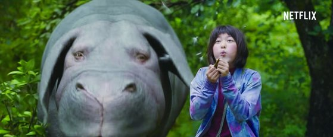

세번째로 내가 좋아하는 영화는 봉준호 감독의 '옥자'이다
옥자의 감독은 우리들에겐 영화 '괴물'로 유명한 봉준호이다.
봉준호는 이 영화를 극장에서 개봉하는 대신, 넷플릭스라는 ott 서비스에서 전세계 동시개봉을 하였다.
반응은 매우 폭발적이었다.
옥자를 보기 위해 많은 사람들이 넷플릭스를 가입하였기 때문이다.

옥자의 주연은 세계적으로 유명한 '틸다 스윈튼','폴다노', 그리고 '안서현'이 맡았다.
그리고 조연으로는 미드 워킹데드로 유명한 '스티븐연','변희봉','릴리콜린스' 등이 있다.
옥자를 처음 보았을 땐, 정말 채식을 해야겠다고 생각했다.
하지만 마음처럼 채식이 쉽지는 않다.
항상 노력은 하고 있지만... 너무 어려운 걸..?